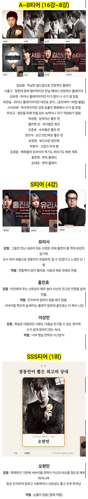

홍진호 약점 ㅋㅋㅋ
홍진호 약점 ㅋㅋㅋ

홍진호 약점 ㅋㅋㅋ
홍진호 약점 ㅋㅋㅋ
진호형이 실컷 설명듣고 옆에 팀원이 오빠 어떻게해? 물어봣는데 어? 어떠카지? 이럼ㅋㅋㅋ 함씩 멍때리는게잇는듯
이상민이 저기 낄 깜냥이되나?
우승자잖아
지니어스 이상민 하는거 보면
사람 자체를 떠나서 존나 잘하긴 함 ㅋㅋ
이상민 게임도 기본적으로 잘하는데
사업가답게 협상랑 정치력이 goat임
ㅇㅇ 두뇌싸움게임을 저렇게도 풀어낼 수 있구나 싶더라 물론 기본적으로 머리도 좋은것같고
유리사는 저 두뇌에 이쁘기까지 하니 세상 살맛나겟다
홍진호는 근데 이젠 너무 퇴물 된거 같더라 피겜3,x 때 진지하게 한게 너무 없음
보면서 몰입을 잘 못한다고 느꼈음
촬영 재미없었나봐
진호햄 후반가면 너무 힘떨어지는거같긴했음
오현민.. 하지만 큐브에서는
유리사누나 그분인가
페북시절에 뽀얀 사진 많이 업로드하던 모델...?
홍진호는 원소다?
홍진호는 과자 계속 먹고있던데 ㅋㅋㅋ
진지하게 [임]하지 않음
장기1판져서 뽑아준거 아님?